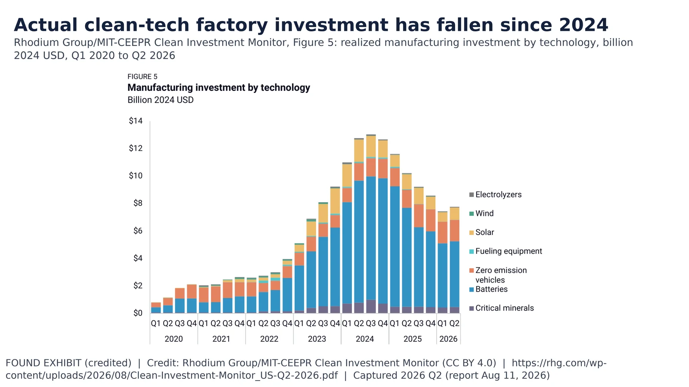

7. Clean-Tech Manufacturing

Realized clean-tech manufacturing investment $8B in Q2 2026, down 24% y/y; six straight declines before. Rhodium/MIT CIM.
Exhibit | Data date: 2026 Q2 (report Aug 11, 2026)
- Aug 16, 2022: IRA signed https://www.congress.gov/bill/117th-congress/house-bill/5376
- Q2 2026: realized clean-tech manufacturing investment $8B, -24% y/y (Data) https://rhg.com/wp-content/uploads/2026/08/Clean-Investment-Monitor_US-Q2-2026.pdf
- Six straight quarterly declines before Q2 2026 (Data) same Rhodium/MIT report
Sources: https://rhg.com/wp-content/uploads/2026/08/Clean-Investment-Monitor_US-Q2-2026.pdf